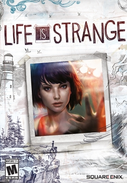
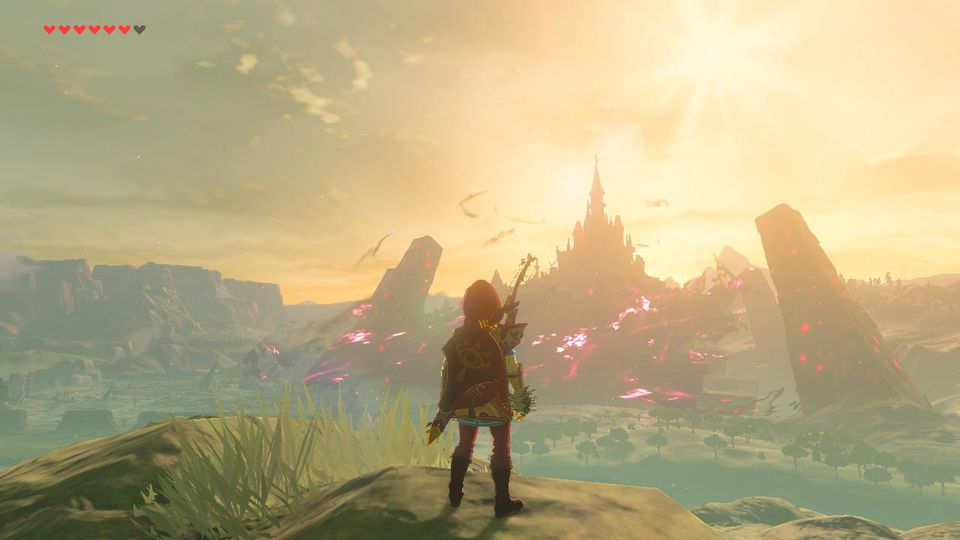

Games We Play

Life Is Strange is a multiplatform game developed by DONTNOD Entertainment and published by Square Enix. Life Is Strange follows the exploits of 18-year old Max Caulfield, a high school senior who learns she has the power to rewind time when she saves her childhood friend, Chloe Price, from being killed. Life Is Strange was released on the XBox One on January 29, 2015[2] and the PC via Steam and other online retail sites for PC Gaming on Janurary 30, 2015.[3] Its release on the PlayStation 3 and PlayStation 4 via the PlayStation Network was delayed until February 3, 2015 on account of technical problems.[4][1][5]

The Legend of Zelda: Breath of the Wild[c] is a 2017 action-adventure game developed and published by Nintendo for the Nintendo Switch and Wii U consoles. Breath of the Wild is part of the Legend of Zelda franchise and is set at the end of the Zelda timeline; the player controls Link, who awakens from a hundred-year slumber to defeat Calamity Ganon and save the kingdom of Hyrule.